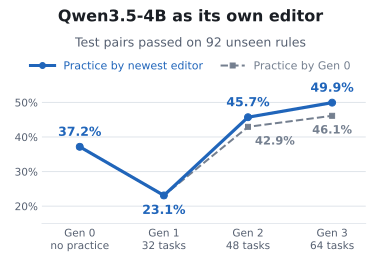

Can a model get better at improving itself? On 92 unseen rules, Qwen3.5-4B’s edits passed 37.2% of test pairs untrained and 49.9% after three rounds of self-training, against 46.1% after one round on its untrained attempts.

Qwen3.5-4B made two kinds of changes to its own weights. First it edited them to follow a new rule. Then it used the record of making those edits to train a better editor of itself. We measured the second change by giving each editor rules it had never practiced. Fan et al. [1] gave Qwen3.5 models raw Python access to their own tensors and found that only the 27B could repair a deliberately damaged weight matrix; the 2B, 4B and 9B all scored 0.0%. Other self-adaptation and self-improvement methods train on human-labeled examples, call external verifiers, or keep the editing policy fixed [2] [3] [4] [8]. We study the question at 4B with no teacher model, no human labels or task graders during training or selection, and no rule in the system prompt when the edited model is tested.
Each task gives Qwen3.5-4B [5] a rule in plain English, such as “define a ⊛ b = 2a² − 3b + 5” or “start veterinary answers with [VET-NOTE]”. Working in a Python workspace, the model trains a rank-16 LoRA [7] into its own weights. The edited model must follow the rule on prompts where it applies and answer sibling prompts, where it does not apply, as it did before. Each rule is scored on 16 (target, sibling) prompt pairs, and a pair passes only if both answers are right. We report the share of passing pairs as the paired pass rate.
In each round of self-play [9], the newest editor practices 16 new tasks, and the next editor is trained on its attempts. Figure 1 follows three rounds. To measure what recursion itself adds, a control trains on the same practice tasks with every attempt made by Gen 0. Across all 92 test rules the third generation passes 49.9% of pairs against the control’s 46.1%. On the 32 newest rules the two tie, at 266 and 268 of 512 pairs (Section 4).
Each episode gives the editor a rule S and four unlabeled seed prompts: two where S applies and two siblings where it must not. In up to four turns of a Python workspace, the editor reads how the unedited model θ0 answers when given S in its prompt, writes at least 16 training prompts and 8 sibling prompts, trains a rank-16 task LoRA ΔWtask with a KL penalty on the siblings, compares its candidates, and ends with finish("SUBMIT", slot) or finish("WITHDRAW"). When θ0 given S gets the rule wrong, the editor can compute the target answers itself in Python.
Self-play has no answer key and no task grader. The unedited model θ0 scores each candidate θ* by comparing answers:
A pair passes when θ*’s answer to the target prompt agrees with θ0 given S and its answer to the sibling prompt agrees with θ0 without S. Bleed is the share of sibling prompts whose answers the edit changed. The editor must also refuse impossible rules. When two samples from θ0 given S at T = 0.35 disagree (agreement below 0.40, as for a rule asking for SHA-256 digests or physical random numbers), or when θ0 already follows S on 85% of prompts, the task counts as a trap: withdrawing earns +0.22 and editing anyway costs −0.25 − 0.5 · Bleed.
Every editor is the original Qwen3.5-4B plus one LoRA. In each round the newest editor attempts 16 tasks it has never practiced, three times each, and the attempts join an archive. The workspace lists the clean attempts in the archive; the editor picks from those lists and trains the next editor from the original weights (Table 1). Because each generation starts from the original weights, the archive has to carry every earlier round’s attempts, so the practice grows from 32 tasks for Gen 1 to 48 and 64. Gen 1 starts from two batches so that its practice spans all four rule families.
Table 1. The self-training recipe. Each setting applies to every generation and to the controls.
| Step | Setting |
|---|---|
| Practice | 16 new tasks a round, three attempts each, made by the newest editor; Gen 1 trains on Gen 0’s attempts at 32 tasks |
| Clean attempt | Submitted, with no code errors and an explicit finish call; on the editor’s own check prompts, at least 90% sibling agreement and at least 50% target agreement (75% when the editor computed the targets) |
| Training examples | At most 2, 3 and 4 clean attempts per rule family for Gen 1, 2 and 3 (7, 9 and 12 in all), plus one or two correct refusals of an impossible rule |
| Update | One rank-16 LoRA on the MLP and attention weights of every layer, trained from the original weights and applied at full strength |
| Guard | KL divergence from the original weights at most 0.12, and every example’s finish call inside the 3,072-token training window |
Each test rule belongs to one of five families: a new binary operator such as a ⊛ b = 2a² − 3b + 5, with +, −, * unchanged on sibling prompts; a scoped marker such as [VET-NOTE] on veterinary answers but not on houseplant answers; a Python API migration such as pydantic v1 to v2, with JavaScript and SQL siblings untouched; extraction of two untagged fields into a fixed format; and, among the 32 newest rules, Python functions checked by running unit tests. Each rule is graded on 16 (target, sibling) pairs plus 8 general factual questions whose answers must not change. Another 28 test tasks are traps the editor should refuse: rules that ask for cryptographic digests, physical random counts, or behavior θ0 already has. No test task overlaps a practice task, and each test set was hashed with SHA-256 before its first evaluation.
The 60 older rules and Cohort 5’s 16 were opened before this recipe was fixed. Cohort 6’s 16 rules were opened once, after every checkpoint in Table 3 was frozen and the frozen set hashed (Table 2).
Table 2. Only Cohort 6 was opened after every checkpoint was frozen. Practice and the pre-test check used no answer key or grader.
| Set | Tasks | Test pairs | Opened |
|---|---|---|---|
| Practice batches A–D | 64 | — | Practice only |
| Pre-test check | 16 | — | Used to check the recipe before any test set was opened |
| 60 older rules | 60 + 20 traps | 960 | Before this recipe was fixed |
| Cohort 5 | 16 + 4 traps | 256 | Before this recipe was fixed |
| Cohort 6 | 16 + 4 traps | 256 | Once, after every checkpoint was frozen |
| All test rules | 92 + 28 traps | 1,472 |
Two controls keep the practice tasks and change who practiced. In the matched control, Gen 0 makes every attempt at the same 48 and 64 tasks. In the same-history control, Gen 3’s archive keeps Gen 1’s attempts but Gen 0 practices the last 16 tasks.
After the first round, each round raised the pass rate (Figure 1, Table 3). On all 92 rules the four generations passed 37.2%, 23.1%, 45.7% and 49.9% of 1,472 pairs. Gen 3 beats Gen 0 by 12.8 points (better on 380 pairs and worse on 192; per-rule permutation p = 0.014) and the same-history control by 14.7 points (better on 453 pairs and worse on 236; p = 0.011).
Against the matched control, recursion adds less. Gen 3 passes 49.9% against 46.1% (better on 258 pairs and worse on 202; pair sign test p = 0.0051, per-rule p = 0.23). The lead comes from the 60 older rules, 48.9% against 42.8% (per-rule p = 0.17). On the 32 newest rules the two tie, 266 and 268 of 512 pairs, and on sealed Cohort 6 Gen 3 leads 56.2% to 50.8% (per-rule p = 0.34). Most of Gen 3’s gain over Gen 0 comes from training on 64 tasks of practice, whoever practiced: the matched control alone is 9.0 points above Gen 0 (per-rule p = 0.065). At 48 tasks, Gen 2 leads its control by 2.8 points (per-rule p = 0.32).
The one generation whose training examples missed rule families fell below its parent. Gen 1’s update had examples from two of the four families and passed 23.1%, 14.1 points below Gen 0 (per-rule p = 0.0054, in Gen 0’s favor); Gen 2’s had three families and Gen 3’s all four. On the last practice batch, Gen 2 produced 12 clean wins against Gen 0’s 7, scored by the same label-free check. Each checkpoint was trained once, and one batch of practice can move the result a long way: the matched and same-history controls differ only in who practiced the middle 16 tasks, and score 46.1% and 35.2%.
Table 3. Gen 3 passes the most test pairs of any single edit, 49.9% on all 92 rules; editors trained on Gen 0’s practice at the same tasks pass 42.9% and 46.1%. Each cell is passing pairs and their share. The last column gives edits submitted on the 92 rules, the share of sibling answers changed, and traps refused.
| Editor | 60 older rules 960 pairs | Cohort 5 256 pairs | Cohort 6 256, sealed | All 92 rules 1,472 pairs | Submits · bleed · traps refused |
|---|---|---|---|---|---|
| No editor | |||||
| Unedited Qwen3.5-4B (θ0) | 72 (7.5%) | 3 (1.2%) | 15 (5.9%) | 90 (6.1%) | — |
| Each new batch practiced by the newest editor | |||||
| Gen 0: untrained editor | 350 (36.5%) | 95 (37.1%) | 102 (39.8%) | 547 (37.2%) | 42/92 · 3.5% · 26/28 |
| Gen 1: 32 practice tasks | 260 (27.1%) | 23 (9.0%) | 57 (22.3%) | 340 (23.1%) | 28/92 · 1.2% · 27/28 |
| Gen 2: + 16 tasks practiced by Gen 1 | 453 (47.2%) | 141 (55.1%) | 79 (30.9%) | 673 (45.7%) | 49/92 · 1.6% · 23/28 |
| Gen 3: + 16 tasks practiced by Gen 2 | 469 (48.9%) | 122 (47.7%) | 144 (56.2%) | 735 (49.9%) | 56/92 · 3.9% · 24/28 |
| Same practice tasks, practiced by Gen 0 | |||||
| Control for Gen 2: 48 tasks | 419 (43.6%) | 100 (39.1%) | 113 (44.1%) | 632 (42.9%) | 47/92 · 4.1% · 22/28 |
| Control for Gen 3: 64 tasks | 411 (42.8%) | 138 (53.9%) | 130 (50.8%) | 679 (46.1%) | 50/92 · 5.2% · 27/28 |
| Gen 3 with Gen 0 practicing the last 16 tasks | 365 (38.0%) | 54 (21.1%) | 99 (38.7%) | 518 (35.2%) | 40/92 · 3.5% · 24/28 |
| For reference | |||||
| Rule in the system prompt, no edit | 716 (74.6%) | 181 (70.7%) | 220 (85.9%) | 1,117 (75.9%) | — |
Small models may fail at weight editing because raw tensor writes are the wrong interface, not because they are small. Following Fan et al. [1], we overwrote eight rows of one middle-layer mlp.down_proj matrix with Gaussian noise of 200 times the matrix’s standard deviation. This drops accuracy on 200 DeepScaleR [6] competition math problems, with up to 16,384 reasoning tokens, to 0.0% at 2B, 4B, 9B and 27B.
With raw Python access, every size scored 0.0% in our paired runs: the models changed 29 to 60 tensors while exploring and damaged layers that had been fine. Four typed operators, each limited in rank and in KL divergence from the original weights, replace raw writes. Before submitting, the model tests whether a patch to one matrix does as well as everything it touched while exploring, and a sequential probability ratio test on 256 reserve problems decides whether the edit is kept. With these operators the 4B, 9B and 27B each found and repaired the damaged matrix (Table 4). Qwen3.5-4B touched 29 matrices, kept only the damaged layer-15 projection, and recovered 32.0% accuracy, 85.3% of its clean 37.5% (p = 5.4 × 10−20). In a separate test on its undamaged weights, Qwen3.5-9B raised its own math accuracy from 45.0% to 60.5% (p = 1.7 × 10−5, KL = 0.0059 nats), above the unedited 27B’s 56.0%.
Table 4. After damage, Qwen3.5-4B solved 32% of the math problems using four weight-editing tools and 0% using raw Python in our runs. All four models took the same 200-problem DeepScaleR test with up to 16,384 reasoning tokens. “Matrices touched → kept” counts the matrices the model changed while exploring and the ones it kept after testing a single-matrix patch. The last column is a separate test in which each model edits its own undamaged weights to raise its math accuracy.
| Model | Clean | Damaged | Fan et al. [1] | Raw Python, our runs | Typed operators | Matrices touched → kept | Undamaged model, self-edit |
|---|---|---|---|---|---|---|---|
| Qwen3.5-2B | 8.0% | 0.0% | 0.0% | 0.0% | 5.0%* (62.5% of clean) | 1 → 1 (L11.down_proj) | 6.5% → 7.5% |
| Qwen3.5-4B | 37.5% | 0.0% | 0.0% | 0.0% | 32.0% (85.3%, p = 5.4e−20) | 29 → 1 (L15.down_proj) | 34.5% → 34.5% (withdrew) |
| Qwen3.5-9B | 51.5% | 0.0% | 0.0% | 0.0% | 46.5% (90.3%, p = 1.0e−28) | 60 → 1 (L15.down_proj) | 45.0% → 60.5% (p = 1.7e−5) |
| Qwen3.5-27B | 61.0% | 0.0% | 33.0% (20 tensors) | 0.0% | 62.5% (102.5%, p = 2.4e−38) | 54 → 1 (L30.down_proj) | 56.0% → 56.0% (withdrew) |
*The 2B repaired the damaged matrix on its fourth turn (5.0% at 16,384 tokens, p = 9.8 × 10−4), but the reserve test, which runs at 4,096 tokens, rejected the edit because 99.6% of the 2B’s valid answers are longer than that.
Every run used NVIDIA H100 80GB GPUs on Modal, plus H200s for the 27B repairs in Section 5: 8.7 H200-hours and 7.9 H100-hours for the repair study and 56.3 H100-hours for building and testing the editors.
@misc{boson2026recursive4b,
title = {Recursive Self-Improvement at 4B via Self-Play Weight Editing},
author = {{Shin Megami Boson}},
year = {2026},
month = nov
}